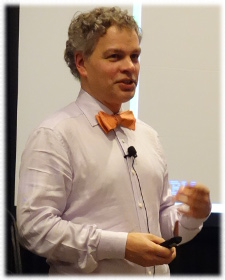

Filesystem images and unprivileged containers
At the 2016 Linux Security Summit, James Bottomley presented some problems that users of unprivileged containers have encountered with regard to the user and group IDs (UIDs and GIDs) stored in filesystem images. Because of the way that user namespaces remap these IDs, there is a need for privileges in the initial namespace to access some files, which is exactly what unprivileged containers are trying to avoid. Bottomley also described some in-progress potential solutions to the problem.
He began by noting that his experience in container technology predates Docker. His interest lies in the kernel's primitive interfaces for containers, rather than the higher-level view of containers that Docker and other container orchestration tools have. Every orchestration tool uses those same kernel interfaces, so any work that is done on the kernel API is automatically made available to them—as long as they turn the feature on, that is.

One of the advantages of the kernel API is that it provides granular virtualization options so that container implementations can pick and choose. Container orchestration systems can enable the virtualization of various kinds of resources via namespaces—or not. That is what allows Docker to not use user namespaces for its containers, since it is not forced to do so, he said.
On the other hand, that granularity makes for an infinite variety of configurations for containers. The Open Container Initiative (OCI) standardization effort does not address this problem at all, Bottomley said. It is concerned with the packaging format for containers and says nothing about the kernel and container configuration. But there is also a subset of those configurations (which is also infinite) that are "completely insecure from the get-go".
Control groups (cgroups) and namespaces are the building blocks of containers, but he noted that most of the interesting development for containers—particularly security-related work—in the kernel right now is happening in the namespace code.
One of the more important namespaces for containers is the mount namespace, which allows containers to have their own view of the mounted filesystems. It is somewhat complex to set up securely, however, he said. The problems for unprivileged containers are primarily found in the mount namespace.
The process ID (PID) namespace is used by many container managers, but Bottomley said he has never quite understood why. There are both system containers, which are those that are meant to contain a full running system, and application containers (like Docker) that exist only to run a single application. The PID namespace exists partly so that there can be multiple init processes all running as PID 1 in separate system containers. The main advantage of having application containers in their own PID namespace is that it virtualizes the PIDs in the system so that containers cannot see the processes in other containers.
User namespaces
User namespaces were dissed in an earlier talk, he said, but he has a different take. "Instead of telling you why you should fear user namespaces, I'd like to tell you why you should love user namespaces."
The kernel API for containers is often described as "completely toxic", Bottomley said. Docker will proudly proclaim that the interface is too hard to be used, which is why everyone should use Docker. But unprivileged containers, which are containers that have been set up without relying on an orchestration system, also provide the "backbone of all security in container subsystems".
As the name implies, unprivileged containers are those that don't have a privileged root user. But that means different things to different people. The idea is to have a container where there is a root user ID inside it, but that ID maps to the unprivileged "nobody" user outside of the container. One way to do that is to have a container that doesn't map the root user (UID 0) at all, which is something that "a lot of people should do, but don't", he said with a chuckle. But some applications may need some "root-y privileges", so there needs to be a UID 0 inside the container that has some amount of elevated privileges with respect to the other UIDs in the container.
User namespaces can be used to implement both cases, but the "contentious bit" is having a root user with some privileges inside what is supposed to be an unprivileged container. In the ideal case, root inside the container would not have any privileges outside of it, but there are lots of actions that require privileges—including setting up namespaces. Many of the container primitives in Linux (e.g. unshare()) need root privileges.
The current state (as of Linux 4.8-rc3) is that user namespaces work well for unprivileged containers. But "cgroups don't work at all" for them. Thus, his talk is all about namespaces because he can't get cgroups to work for him.
Effectively, user namespaces give enhanced privileges to a user. Any time there is a mechanism to upgrade user privileges, it has the potential to be a security problem. But, he said, user namespaces do allow giving users enhanced privileges such that they believe they are root in a container, though they cannot damage the rest of the system using those privileges. That is the ideal that is being sought.
The allegation that he has heard is that "we are not there yet", but he disagrees. The IBM Bluemix container cloud is running in a bare-metal environment that employs user namespaces as the sole mechanism to protect the host from the guests, Bottomley said. The company is demonstrating that user namespaces are sufficient for security separation in a publicly accessible cloud. It has effectively bet its cloud business on user namespaces.
At its core, a user namespace is a mapping between IDs inside and outside the namespace. It is controlled by /proc files (uid_map and gid_map) that describe ranges of UIDs and GIDs to map from and to. There is also a projid_map file that is for group quotas, which can largely be ignored since it is only available for XFS, though ext4 support is coming. Finally, there is a setgroups file that can be used to deny processes in the namespace the ability to drop groups, which could actually grant privileges in some (believed to be fairly uncommon) configurations.
The user that creates a user namespace only has privileges to map their own UID into the new namespace. There are privileged utilities (newuidmap and newgidmap) that will allow additional mappings. The UID that creates the namespace is considered the owner of that namespace, so only it and root can actually enter the namespace (using nsenter()). In addition, unmapped UIDs are inaccessible even to root inside the namespace.
Filesystems
The kernel maps between the uid_t that represents the UID in the namespace to a kuid_t that is the real UID. For filesystems mounted in a namespace, that mapping is still done. So a container filesystem image gets handled with the real kuid_t values that have been stored as a file's owner and group.
So, if you try to run a standard Docker image in an unprivileged container, "it will fall over" because it has the wrong UIDs. Filesystem images can be shifted to have UIDs that get mapped into the container, but managing multiple shifted filesystem images is problematic.
What is really wanted is that IDs would be changed to their real counterparts within the kernel (so that any escape from the container would not be done using the container-specific UIDs), but that accesses to the filesystem would be translated back to the container UIDs—but only for filesystems mounted within the container. This is an unsolved problem in Linux right now, and one that is currently being worked on.
An old solution is bindfs, which is a FUSE filesystem that remounts a subtree with UID and GID changes. It requires root to do the mount. One problem is that the mappings are done one by one on the FUSE command line, so handling a thousand remappings is problematic. That is a solvable problem, but container developers are leery of depending on FUSE because of performance concerns.
Two other solutions were proposed for 4.6: Bottomley's shiftfs and portable root filesystems from Djalal Harouni. Shiftfs is effectively an in-kernel bindfs that uses ID ranges to avoid that problem in bindfs. It also requires root to set up a remapped subtree, which can then be bind mounted into the container. It "works reasonably well", he said.
Portable root filesystems allow any mounted filesystem to be marked as "shiftable", which means that it can be bind mounted into a container using the existing user namespace remapping. It requires changes to the VFS and underlying filesystems to add the mark, however. Both shiftfs and portable root filesystems allow bind mounting a subtree into a container, which solves most of the problem.
In addition, Seth Forshee is working on unprivileged FUSE mounting, which is part of what has held up either of the other two solutions from getting merged—beyond the fact that no one is quite sure which of the two should be chosen. Being root inside a user namespace does not provide enough privileges to mount a FUSE filesystem, so Forshee and namespaces maintainer Eric Biederman are looking to add filesystem ownership to user namespaces.
Effectively, the superblock of a filesystem would have a mapping for UIDs and GIDs that would be applied whenever a write was done to the filesystem. That would mean there would be a "double shift" of IDs: once from the namespace to kernel and then from the kernel to the filesystem view. But, to him, it looks like a good solution since it would move any security problems in shiftfs from being his responsibility to Forshee and Biederman, he said with a grin. That might not make for a particularly good argument from a security perspective, however.
The challenge now is to integrate the various pieces. Instead of two solutions (shiftfs, portable roots), where one needs to be chosen, there are those two solutions plus a "radically different" approach (superblock mapping). Both shiftfs and portable roots would trivially be able to use the superblock mapping (since they both have superblocks), but it all needs to be put together in a form that's ready for merging. He doesn't expect that to happen for a few more kernel development cycles, so there is still time for security folks to weigh in with concerns if they have them.
In conclusion, Bottomley said that the problem of accessing container images in unprivileged containers is unsolved at this point, but the broad outlines of potential solutions are taking shape. If there are security concerns with those, and "the squeaking in the room" seemed to indicate that there are, now would be the right time to bring them up. Either a solution is found or containers will always have a root user in them, which is more of a security threat than providing a sort of "fake root" for accessing container images.
[I would like to thank the Linux Foundation for travel support to attend
the Linux Security Summit in Toronto.]
| Index entries for this article | |
|---|---|
| Security | Containers |
| Conference | Linux Security Summit/2016 |
Posted Sep 15, 2016 7:38 UTC (Thu)
by TheJH (subscriber, #101155)
[Link] (2 responses)
No. That ID maps to some UID outside the container, but *not* the "nobody" user. Just some UID that is not special in any way except that it's not listed in /etc/passwd, but instead (if you're using unprivileged containers) in a range in /etc/subuid.
There is a situation with user namespaces where you see "nobody" users, but that's when you are *inside* the namespace and looking at stuff outside that has a UID that isn't mapped into the namespace, not the other way around.
> It has effectively bet its cloud business on user namespaces.
That's pretty bold.
> That would mean there would be a "double shift" of IDs: once from the namespace to kernel and then from the kernel to the filesystem view.
That's how everything(*) works with user namespaces. As soon as a UID crosses the kernel-userspace boundary, it is mapped. Same thing if you e.g. use SCM_CREDENTIALS: The sender's values are mapped to the kernel view when sent and mapped back to the user view when received.
> Shiftfs is effectively an in-kernel bindfs that uses ID ranges to avoid that problem in bindfs.
My main concern with shiftfs is that, as far as I understand, this will reduce the boundary between containers and even between a container and the init namespace. With bindfs, the backing filesystems for all containers will use the same UID ranges, right? So a container root could store a setuid container-uid-0 binary inside the container and thereby create a setuid shared-container-root-uid binary on the host system? Even if that binary is inside a uid-0-owned, mode-0700 directory, it still seems a bit brittle.
*: Except signal sending, and that's ugly and slightly buggy. kill() takes the kuid, maps it down, then userns_fixup_signal_uid() maps it back up again and then back down into another namespace.
Posted Sep 15, 2016 21:02 UTC (Thu)
by ebiederm (subscriber, #35028)
[Link] (1 responses)
Posted Sep 15, 2016 23:29 UTC (Thu)
by Cyberax (✭ supporter ✭, #52523)
[Link]
Posted Sep 16, 2016 12:50 UTC (Fri)
by ibukanov (subscriber, #3942)
[Link]
But that does not require universal user namespaces that remaps other users. Remapping just root is enough and presumably could be implemented with much simpler code than the current complexity of the universal map.
Posted Sep 24, 2016 1:36 UTC (Sat)
by toyotabedzrock (guest, #88005)
[Link]
Filesystem images and unprivileged containers
Filesystem images and unprivileged containers
Filesystem images and unprivileged containers
Filesystem images and unprivileged containers
Filesystem images and unprivileged containers